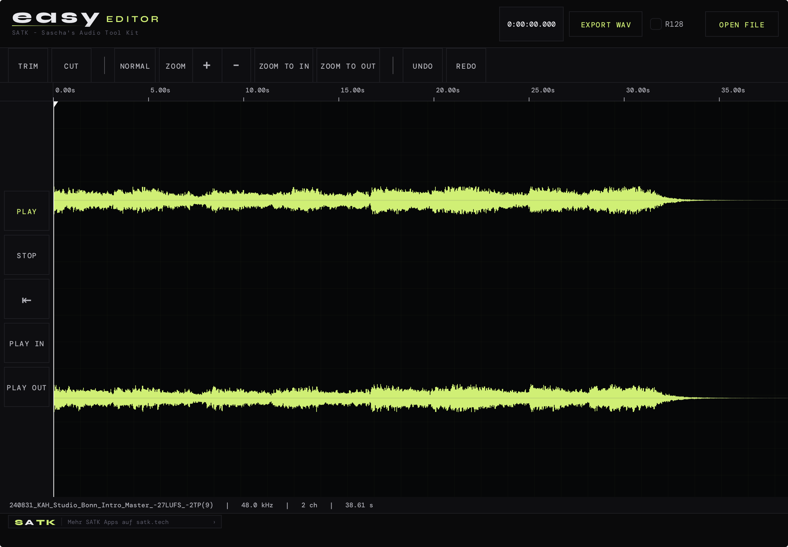

Wellenform-Editor für iPhone und iPad. Datei aus Files oder iCloud Drive laden, Bereich markieren, schneiden oder trimmen, Fade In/Out anlegen — und R128-normalisiert wieder ausgeben. Multi-Touch-Zoom, Zero-Crossing-Snap, Undo. Kein Cloud-Upload, alles auf dem Gerät.

Easy Editor ist die fokussierte Single-File-Lösung für schnelle Audioschnitte am iPhone und iPad. Datei rein, Bereich markiert, Schnitt durch — fertig zum Versand. Keine Spuren, keine Sessions, kein DAW-Overhead. Verzahnt mit Instant Player für direkten Pad-Transfer.
Pinch-to-Zoom bis auf Sample-Ebene, Zwei-Finger-Pan, Tap-to-Position. Vorschau läuft an der Touch-Position. Sample-genaue Selektion mit ziehbaren In-/Out-Handles. Frame- und Millisekunden-Anzeige am Cursor.
Schnitte rasten automatisch auf Nulldurchgänge — keine Klicks an den Rändern. Einzeln pro Marker abschaltbar. Beim Trimmen wird der nächste Zero Crossing in Richtung Stille gewählt, beim Schneiden der nächstliegende.
Linear, equal-power, exponentiell, logarithmisch. Fade-Länge per Drag oder Numeric-Input in ms. Fade In/Out und Crossfade an Schnittkanten. Kurven sind in der Wellenform sichtbar — keine Überraschung beim Export.
Optionale Lautheitsnormalisierung beim Export auf −23, −16 oder −14 LUFS-I (Broadcast / Podcast / Streaming). True-Peak-Limiter auf −1 dBTP nach ITU-R BS.1770-4. Dieselbe Engine wie Loudness Correct.
Voll integriert in die Files-App: iCloud Drive, Dropbox, Google Drive, USB-C-Sticks und SMB-Shares. AirDrop direkt aus dem Share-Sheet. WAV, AIFF, FLAC, MP3, M4A. Output WAV/AIFF in 16, 24 oder 32 Bit.
Jeder Schnitt, jeder Fade, jede Selektion lässt sich rückgängig machen — bis zum Ladestand. Non-destruktiv: das Original bleibt unangetastet, bis du explizit überschreibst oder eine neue Datei exportierst.
Importieren, schneiden, exportieren — ohne Sessions, ohne Settings-Marathon. Auf iPhone und iPad gleich bedienbar, im Layout an die jeweilige Bildschirmgröße angepasst.
Aus der Files-App, iCloud Drive, Dropbox oder per AirDrop. WAV, AIFF, FLAC, MP3, M4A. Mono oder Stereo. Rendert sofort eine Wellenform — keine Hintergrund-Cloud-Verarbeitung.
Pinch-to-Zoom auf den Schnittpunkt, In-/Out-Handles ziehen. Zero-Crossing-Snap aktiv (abschaltbar). Loop-Vorschau über die Selektion zur Kontrolle, bevor du schneidest.
Cut entfernt die Selektion, Trim behält sie. Optional Fade In/Out an die Schnittkanten. Jeder Schritt undo-bar. Solo-Audition zur Auswahl-Vorschau.
WAV oder AIFF in 16/24/32 Bit, optional R128-Normalisierung auf −23 / −16 / −14 LUFS. Ziel: Files-App, AirDrop, Mail — oder zurück auf das Instant-Player-Pad, von dem der Schnitt kam.
Native iOS-App, keine Web-Wrapper, keine Cloud-Pflicht. R128-Engine geteilt mit Loudness Correct.
Vollwertige DAWs auf iOS sind beeindruckend, aber für einen 30-Sekunden-Schnitt überdimensioniert. Easy Editor macht genau drei Dinge richtig: laden, schneiden, exportieren. Mit Zero-Crossing-Snap, Fade-Kurven und R128-Normalisierung in Broadcast-Qualität — und ohne Cloud-Pflicht. Verzahnt mit Instant Player für direkten Pad-Transfer.